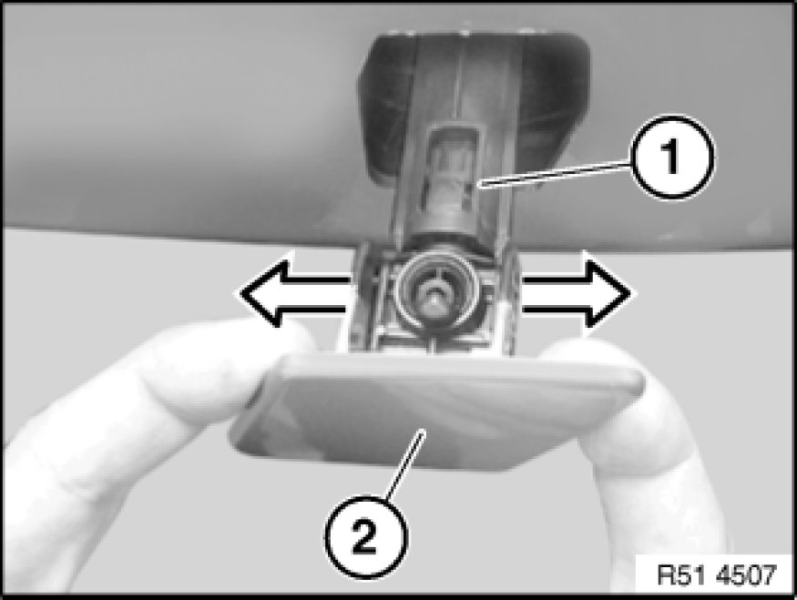
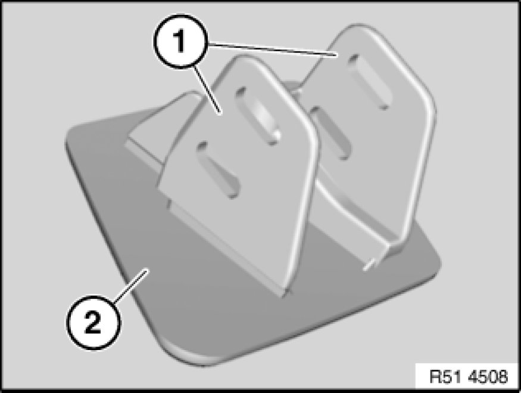

51 11 ... - Removing and installing/replacing cover for headlight washer system on left or right (from 09/06)
51 11 ... - Removing and installing/replacing cover for headlight washer system on left or right (from 09/06)

Slowly pull out spray nozzle (1) by cover (2).
Important!
Risk of damage!
When releasing cover (2), grip spray nozzle (1) firmly and then allow to slide back slowly
Release cover (2) sideways from spray nozzle (1).

Installation Note:
Guides (1) on cover (2) must not be damaged.